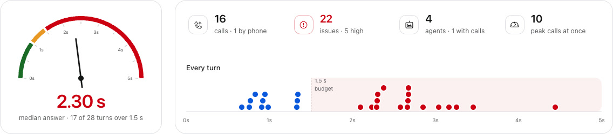
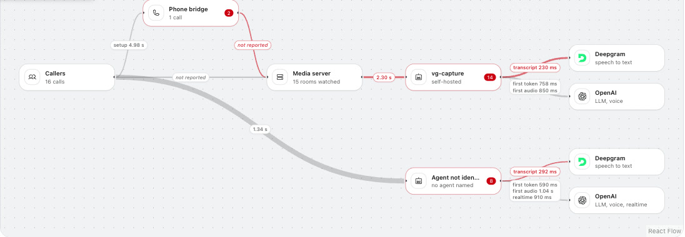

Voice agent debugging
Start with the whole picture.

See the answer time against your budget.
Captured console data · each dot is a turn
Phone line. Media server. Agent. Models.

Start with this hop
Unknown stays unknown
Console preview · OSS + Cloud V1 in progress